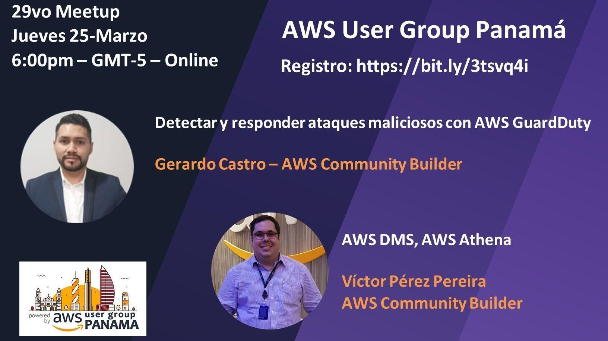
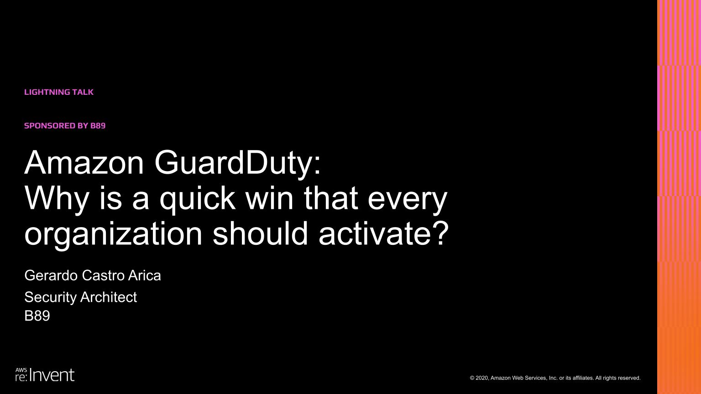
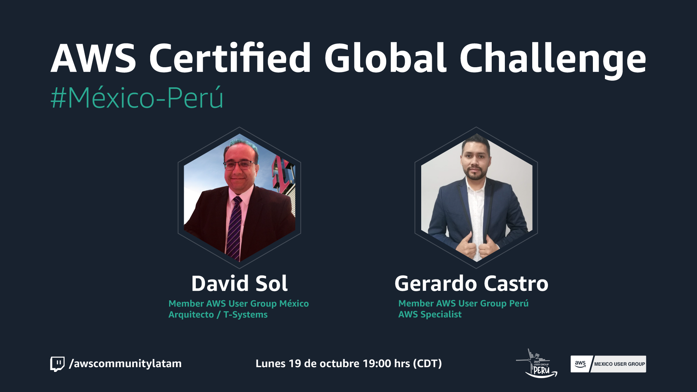
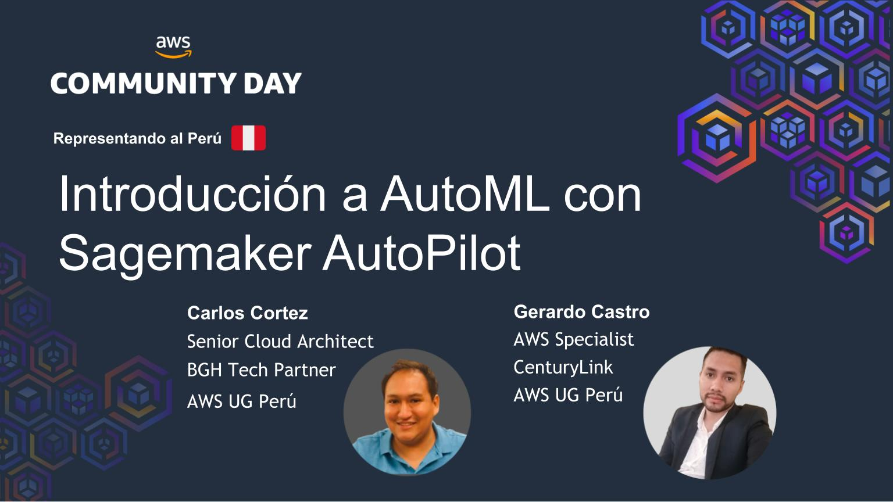
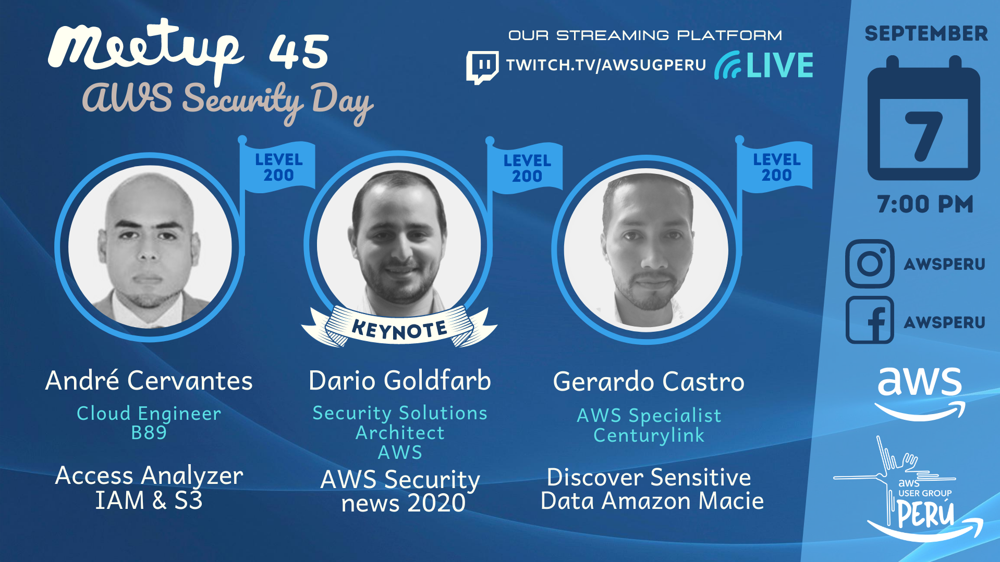
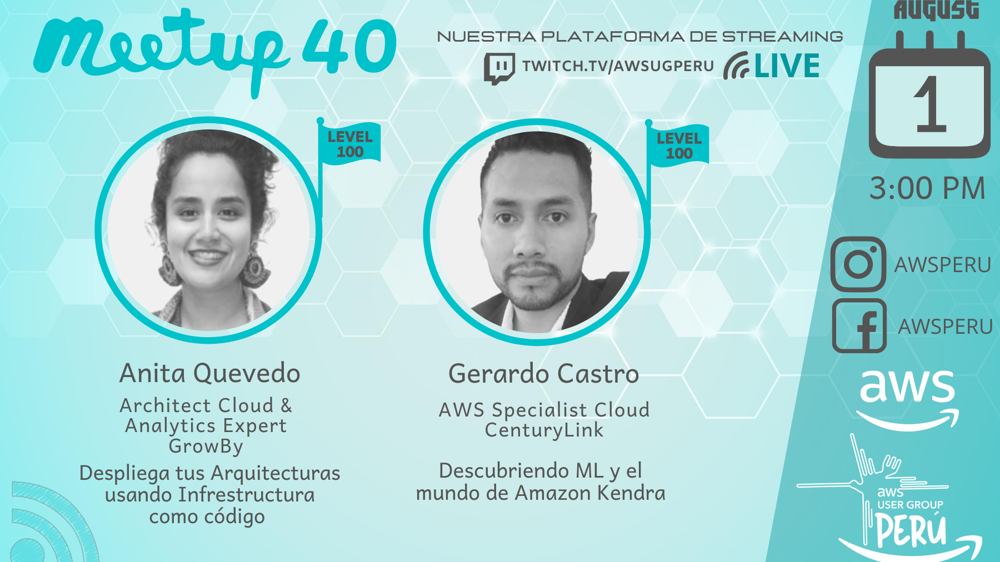
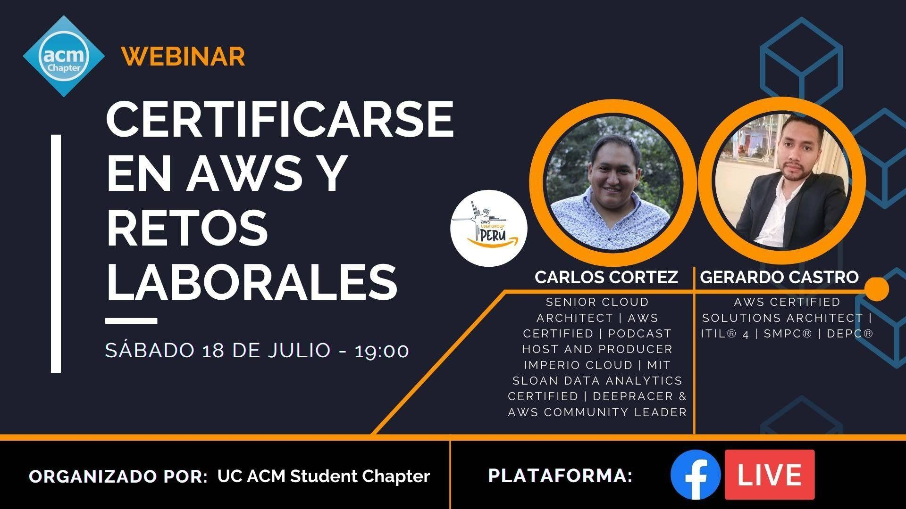

Mis Charlas
Hola, me encantaría poder colaborar contigo generando contenido AWS, por lo que si estas buscando algun speaker para tu AWS User Group, Comunidad, Organización, Canal, etc. Solo debes escribirme por directo a mi perfil en LinkedIn
Detección y respuesta de ataques maliciosos con AWS GuardDuty

Fui invitado por el AWS UG Panamá liderado por Victor Pereira y Hernan Piña, donde pude compartir acerca de lo fácil que es usar AWS GuardDuty para detectar ataques maliciosos en tus cargas de trabajo en AWS. Ademas de como a traves de Cloudwatch Events, SNS y Lambda, podiamos generar una respuesta ante un posible incidente de seguridad detectado previamente por GuardDuty.
Lightning Talk during re:invent 2020

Uff, esta fue una muy grata experiencia por 2 sencillas razones, 1. Estaba brindando una charla relámpago frente a los lideres de AWS de casi todo el mundo 😱 y 2. Fue mir primera charla en inglés, que dicho sea de paso, aún estoy un poquito flojo en eso 😅
AWS Certified Global Challenge

Este fuen un evento de casi 10 sesiones si es que mi memoria no falla 🤔. Colabore junto a David Sol, un co organizador del AWS UG México para brindar lo que fue la 3ra sesion de este desafío global, que consistia en ayudar a entrenar a tantas personas fuera posible para que alcancen la certificación AWS Practitioner.
Charla

Este fue un junte para la historia 😎. Lo digo porque fue un evento organizado por AWS donde se juntaron todos los AWS User Groups de Latinoamérica 🔥. Tuve el honor de representar a mi amado Perú junto a Carlos Cortez, que lidera el AWS UG Perú.
AWS Security Day Peru

Un evento que fue organizado de principio a fin por André Cervantes y mi persona, y tuvimos el honos de contar con la presencia virtual de Dario Goldfard quien es Arquitecto de Seguridad en Amazon Web Services y André Cervantes quienes brindaron las novedades de seguridad en AWS del 2020 y una introducción de IAM Access Analyzer respectivamente. Menos mal pude cerrar el evento con una pequeña charla acerca de Amazon Macie y el descubrimiento de datos sensibles 😛
Descubriendo ML y el mundo de Amazon Kendra

Brindar esta charla, y hablar acerca de Amazon Kendra con demo incluida fue especial para mi. Estaba saliendo de “mi zona de confort”, ya que este no era un servicio relacionado a seguridad. Me divertí y fue muy enriquecedor investigar acerca de Amazon Kendra, que dicho sea de paso, tenia menos de 30 días de su lanzamiento oficial por parte de AWS
Certificarse en AWS y retos laborales

Este evento fue organizado por la Universidad Continental de Huancayo - Perú. Fue una charla 3/3 en donde el AWS UG Perú pudo colaborar con ellos para ayudarles e incentivar el aprendisaje y adopción de AWS una comunidad de jóvenes universitarios 🤗. No fue una charla tecnica, aquí hablamos acerca del impacto que AWS ha generado en la mayoría de profesionales que hoy en dia trabajamos usando AWS.